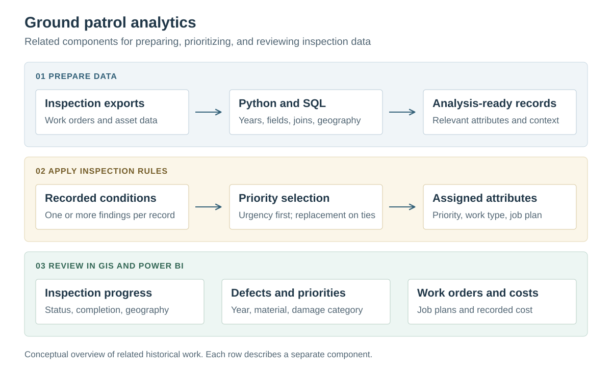

Ground patrol analytics and inspection priorities
Preparing inspection records, assigning consistent priorities, and reviewing work orders and defects in GIS and Power BI.
What I did
I developed inspection-data preparation and priority-assignment workflows, alongside GIS and Power BI views for examining inspection progress, defects, and work orders.
Result: The work provided structured inspection records, consistent rule-based assignments, and reporting views for reviewing progress and maintenance needs.
Tools
- Python
- pandas
- SQL
- ArcPy
- ArcGIS
- Power BI
This case study presents related historical processing and reporting components. It does not establish a single automated Power BI refresh chain or a measured cost-savings result. Client records and infrastructure details remain private.
Preparation, rules, and reporting
The project combined data preparation, inspection-priority logic, and analytical views. The diagram separates these components so that the reporting work and the underlying processing are clear.

Prepare records for comparison
Historical inspections arrived in spreadsheets and year-specific exports. Python preparation converted workbook data to CSV, retained relevant inspection and asset attributes, added the reporting year, and combined selected yearly files.
A related SQL workflow joined work orders to asset locations, parent locations, and structure attributes. Python normalized dates and coordinates, while ArcPy created point features and added hazard-area context through a spatial overlay.
Make priority assignments explicit
Condition codes mapped to a priority, work type, and job plan. When a record contained several findings, the calculation selected the lowest numerical priority. If equally urgent findings called for repair and replacement, replacement took precedence.
These were deterministic business rules. The examples below illustrate the selection logic using hypothetical findings.
| Findings on one record | Selected action | Reason |
|---|---|---|
| Priority 1: repair; priority 2: replace | Priority 1: repair | The lower numerical priority takes precedence. |
| Priority 1: repair; priority 1: replace | Priority 1: replace | Replacement takes precedence at equal priority. |
Review the operational questions
The GIS dashboard organized inspection progress, status, priorities, and geography. Power BI views expanded the analysis to work-order status, recurring defects, job plans, and cost summaries, with filters for reporting year, material, and location.
| Question | View |
|---|---|
| Where does inspection work remain? | Inspection status and progress with a map. |
| Which defects and priorities recur? | Comparisons by reporting year, damage category, and asset material. |
| What maintenance work is represented? | Work-order status, job-plan, and geographic summaries. |
| How are recorded costs distributed? | Yearly and circuit-level cost summaries. |
Technical details
Independent consulting · Utility inspection analytics
Inspection findings, asset attributes, and work orders needed a consistent basis for comparison across locations and reporting years.
- Prepare spreadsheet and CSV exports with relevant inspection attributes and reporting years.
- Join work orders to asset records and add geographic context for GIS use.
- Apply explicit condition rules to assign priority, work type, and job plan.
- Present inspection status, defect patterns, priorities, and cost summaries in reporting views.